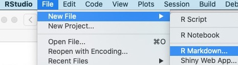
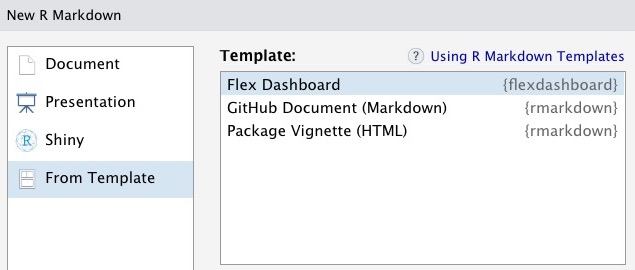
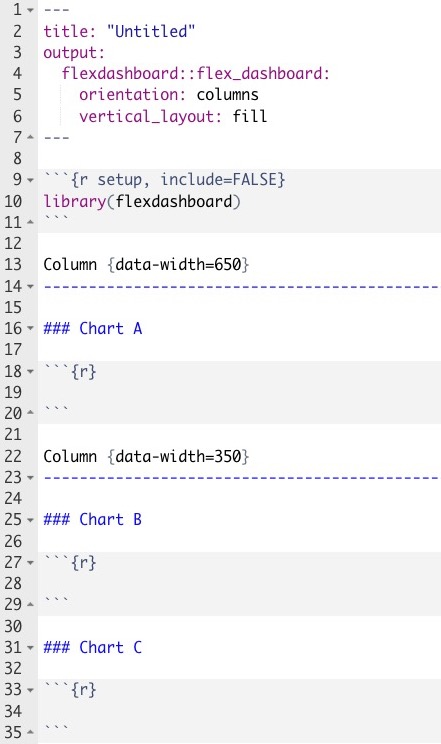
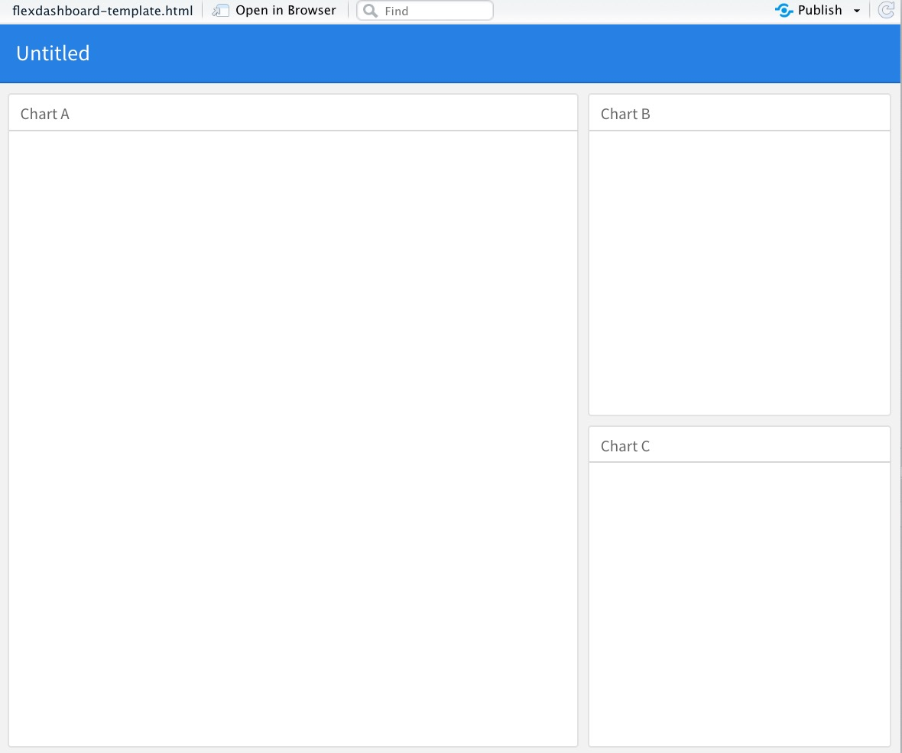
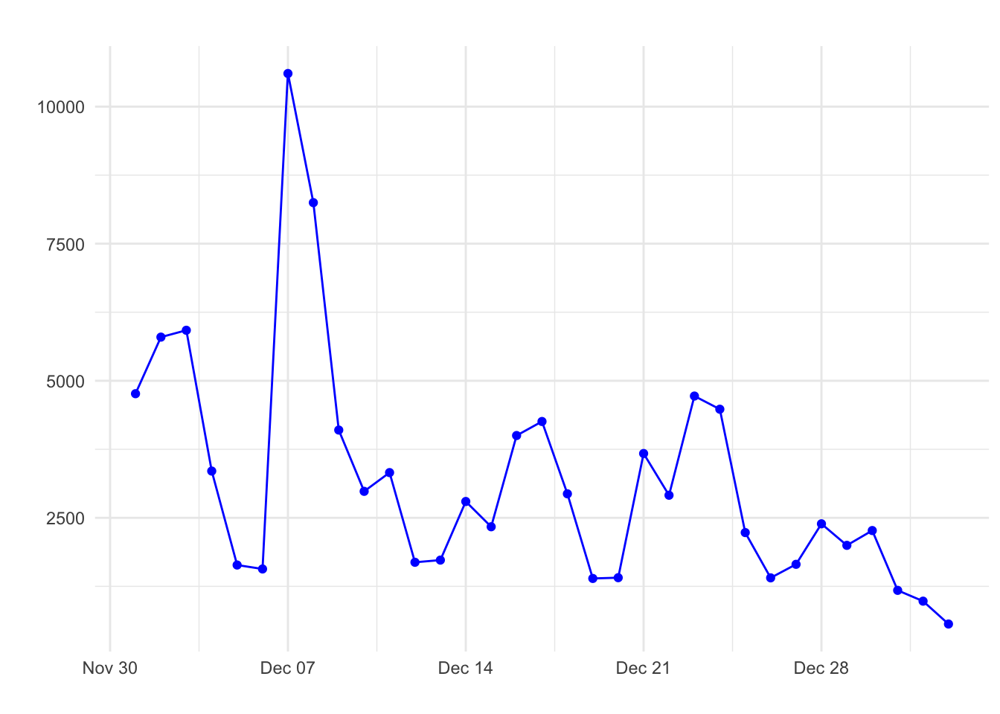
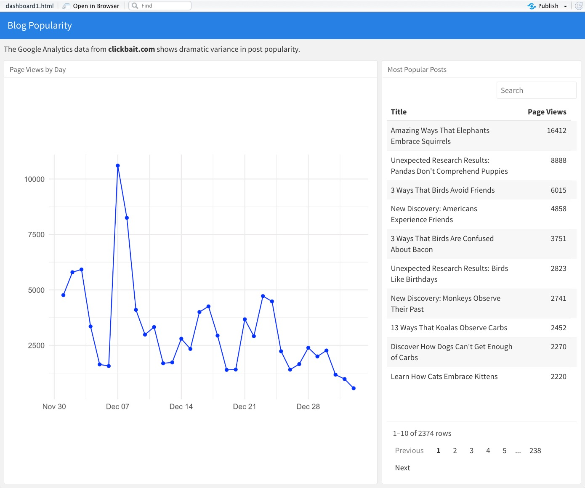

Photo by Alan Biglow on Unsplash
Back in November, I took readers step by step through the somewhat long process of authenticating and downloading Google Analytics web site data into R. This post will be much simpler; I’m going to walk you through creating a dashboard showing blog post popularity using the flexdashboard package.
Before we go there, however, I want to re-emphasize a correction that we made to the original credentials post. Mark Edmonston, the author of the terrific googleAnalyticsR package, has created a new version of his package that eliminates the need for OAUTH credentials when running on a server. Once that update is available on CRAN, I’ll update this post to document the simpler process of only submitting service account credentials. In the meantime, though, we’ll continue using both OAUTH and service account credentials.
All the code and data presented in this post is in a GitHub repository at https://github.com/rstudio/a-flexdashboard-for-google-analytics in the Part2 folder. The code from Part 1 of this blog series is also available in the Part1 folder; however, users should be aware that they’ll need to provide their own authentication secrets for that code to work. My previous article, Custom Google Analytics Dashboards with R: Downloading Data, provides detailed instructions for how to obtain those credentials.
To make it easy for readers to reproduce this dashboard, I’ve constructed a synthetic set of Google Analytics data named clickbait_GA_data.csv for a hypothetical blog at the address clickbait.com. At the time of this writing, that domain was currently for sale and therefore shouldn’t be confused with any real blog. While the synthetic traffic comes from the Google Analytics log from an actual blog, the titles and URLs of all the articles are made up (although I wish I could find out the 3 Ways That Birds Are Confused About Bacon). The dataset contains more than 32,000 visits and 105,000 page views conducted over one month.
So let’s begin building our dashboard. To do this, we’re going to open a new flexdashboard R file. We do that by selecting File > New File > R Markdown…. as shown below.

We next select From Template > Flex Dashboard.

That selection yields a new file which looks like this:

If you knit that file, you end up with this output in your Preview window.

The preconfigured template has provided us with window panes in which to put our Google Analytics graphs and tables. We simply have to fill them in!
Our process for building our Google Analytics (GA) dashboard will go like this:
dplyr and ggplot2 to create a graph of pageviews by day for Chart A.reactable package.So let’s build this dashboard.
We begin our dashboard by reading in the data from Google Analytics. In our last post, we built code to authenticate and read in the GA data using the Google Analytics API. In a production dashboard, we would put that code in the setup here.
However, because we have our synthetic data in a .csv file, reading in the data will be a much simpler process. We will simply load the libraries we intend to use, apply the read_csv function from the readr package to our dataset, and put all of this in the setup chunk of our R Markdown file as shown below. I’ve shown the first few lines of the output to provide a sense of what that content looks like.
library(flexdashboard)
library(readr)
library(ggplot2)
library(dplyr)
library(reactable)
gadata <- read_csv("./data/clickbait_GA_data.csv")
show(gadata %>% head(7))## # A tibble: 7 x 5
## date pageviews users pageTitle landingPagePath
## <date> <dbl> <dbl> <chr> <chr>
## 1 2020-12-01 2 2 3 Ways That Turtles… www.clickbait.com/2011/02/28/…
## 2 2020-12-01 2 1 3 Ways That Turtles… www.clickbait.com/2011/02/28/…
## 3 2020-12-01 3 3 Shocking Finding: W… www.clickbait.com/2012/06/04/…
## 4 2020-12-01 1 1 Unexpected Research… www.clickbait.com/2012/11/29/…
## 5 2020-12-01 11 10 Unexpected Research… www.clickbait.com/2013/06/10/…
## 6 2020-12-01 1 1 3 Ways That Europea… www.clickbait.com/2013/10/22/…
## 7 2020-12-01 2 2 Why Monkeys Deal wi… www.clickbait.com/2014/01/17/…With the GA data in a tibble, we can use dplyr to group and sum the page views by day and then plot the data over time with ggplot2. This code will go in the R chunk under the heading Chart A.
theme_set(theme_minimal())
gadata_by_day <- gadata %>%
group_by(date) %>%
summarize(pagesums = sum(pageviews))
g <- ggplot(gadata_by_day, aes(x = date, y = pagesums)) +
geom_point(color = "blue") +
geom_line(color = "blue") +
scale_x_date() +
labs(x = "", y = "", title = "")
show(g)
We’d also like to present a table of the most popular blog posts on our blog. We could do this with a variety of packages such as kable or DT, but for this example, we’ll use the reactable package. Reactable gives users interactive features such as the ability to search and sort the table. All this is done using client-side Javascript, which makes the table interactive without requiring server involvement.
We can compute and display the most popular blog posts by inserting this code into the chunk under Chart B. We added arguments to change the column names, specify the widths of the columns, and permit scrolling, searching, and striping just to make it prettier. Those could have been omitted if we weren’t fussy about the formatting.
gadata_most_popular <- gadata %>%
count(pageTitle, wt = pageviews, sort=TRUE) %>%
head(10)
## For those who aren't as comfortable with the options in count, the following
## code would also work
# gadata_most_popular <- gadata %>%
# group_by(pageTitle) %>%
# summarize(n = sum(pageviews)) %>%
# arrange(desc(n))
reactable(gadata_most_popular,
columns = list(pageTitle = colDef(name = "Title",
align = "left",
maxWidth = 250),
n = colDef(name = "Page Views",
maxWidth = 100)),
pagination = FALSE,
searchable = TRUE,
striped = TRUE)Finally, we change the heading of our R Markdown code to have a meaningful title, rename the headings from Chart A and Chart B to something more reasonable, delete the heading and chunk for Chart C, and add some explanatory text about what our dashboard is about. Our finished dashboard R Markdown code should look like the code in dashboard1.Rmd
When we knit the results, we see this:

If we have access to an RStudio Connect server, we can publish this dashboard to that server by clicking the Publish button at the top right of the Viewer window. On the RStudio Connect server, we can schedule the dashboard to regularly download and analyze the Google Analytics data and allow others to interact with it. We can literally go from a desktop R Markdown document to a dashboard running in production for others to see in just a few clicks.
This post shows how:
flexdashboard framework uses the same headings and code chunk structure as a regular R Markdown document. This means that we don’t have to learn a new language to build our dashboard.flexdashboard provides visual containers into which we can drop code that uses other packages that we know such as ggplot2, dplyr, and reactable. Again, we don’t have to learn new and unfamiliar tools to create our dashboard.However, while we’ve successfully created a simple Google Analytics dashboard, we haven’t tackled the question that kicked off this series of blog posts, namely:
Which of your blog articles received the most views in the first 15 days they were posted?
That’s the question we’ll tackle in part 3 of this series, where we’ll derive the dates of publication for our blog posts and create a dashboard that ranks blog posts on the basis of a 15-day window of visitors. This approach will ensure that we don’t favor older blog posts that have just had more time to gather views.
If you would like to learn more about some of the packages and products we’ve used, we recommend:
flexdashboard package.